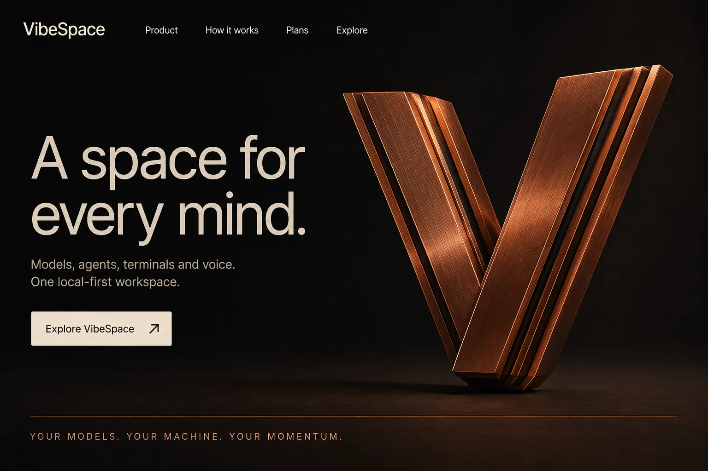
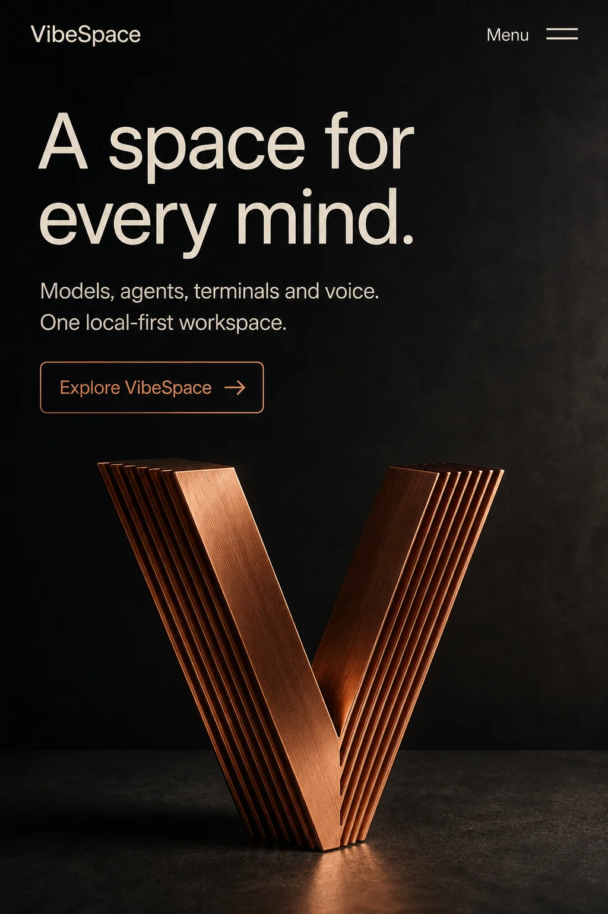
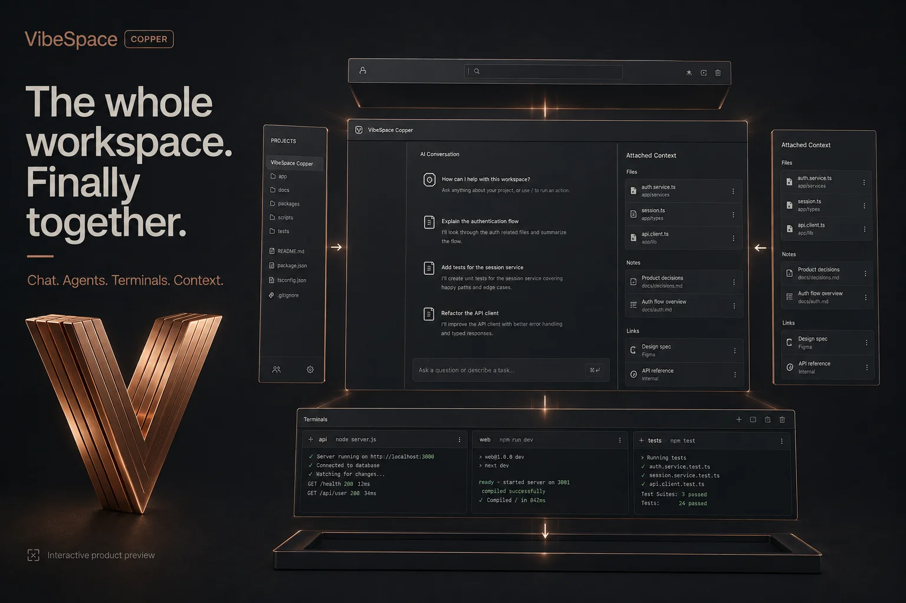
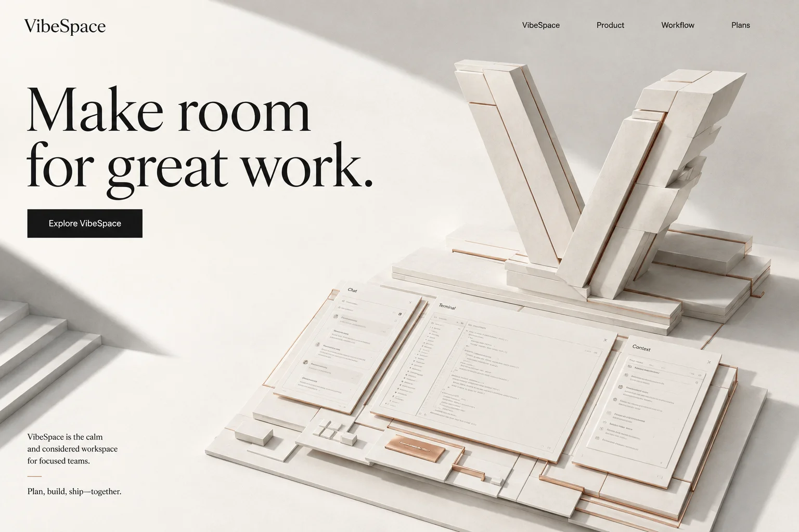
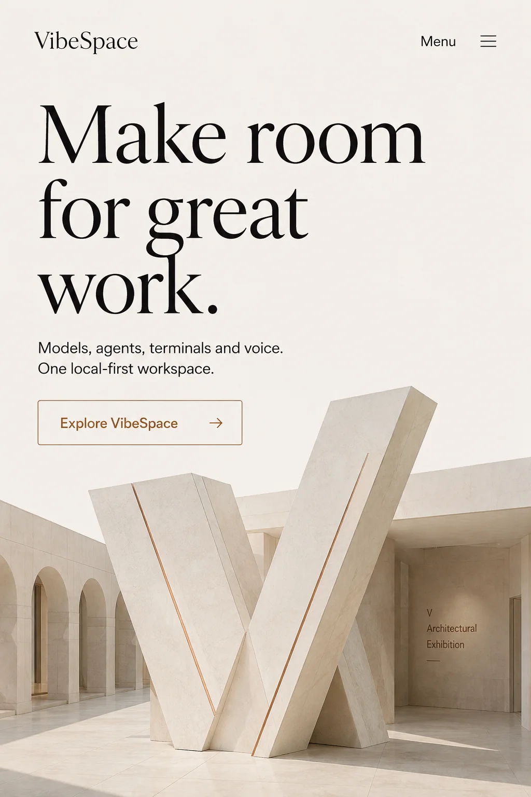
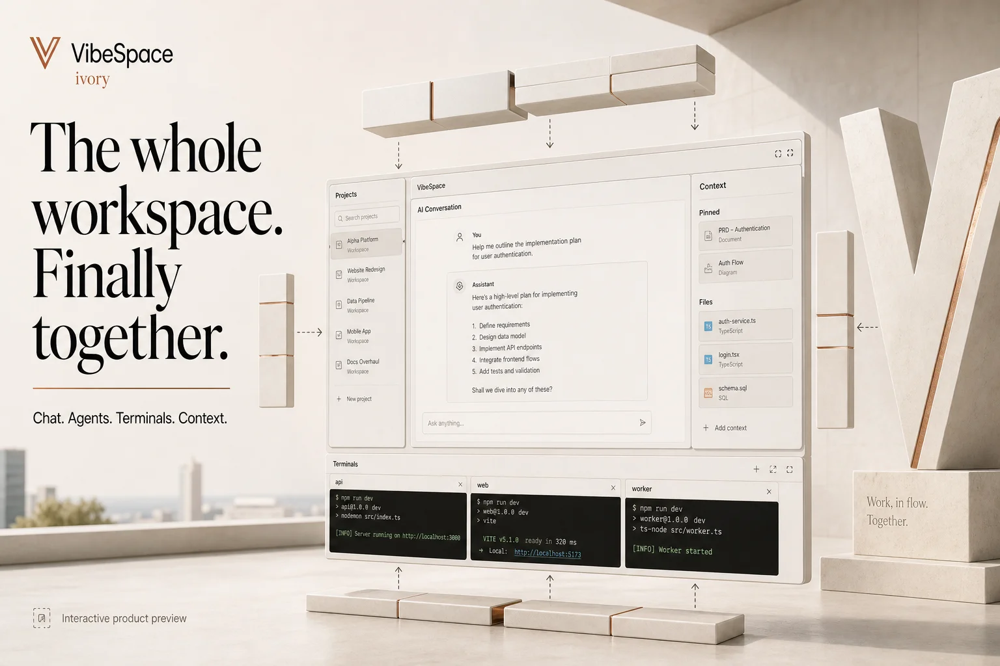
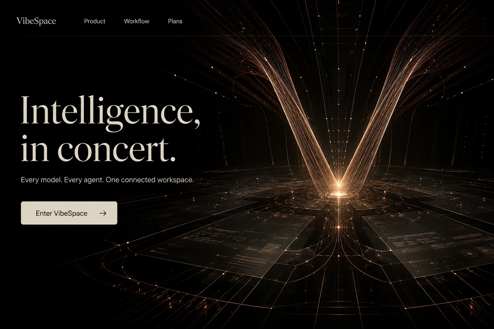
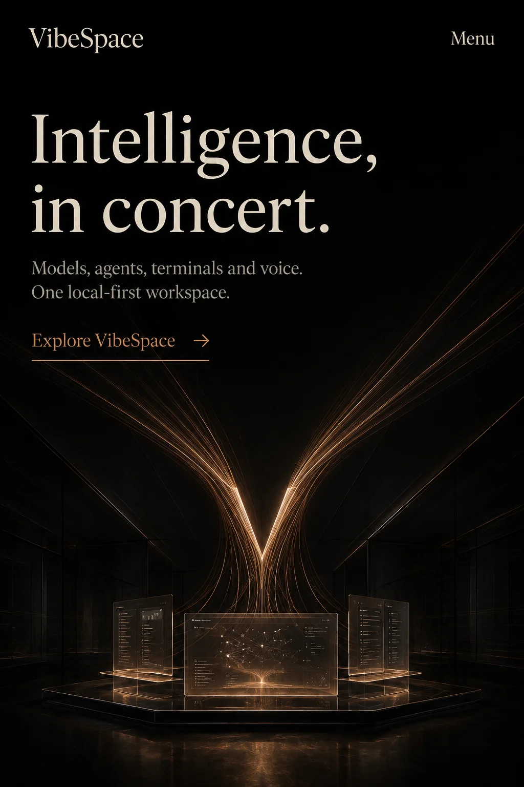
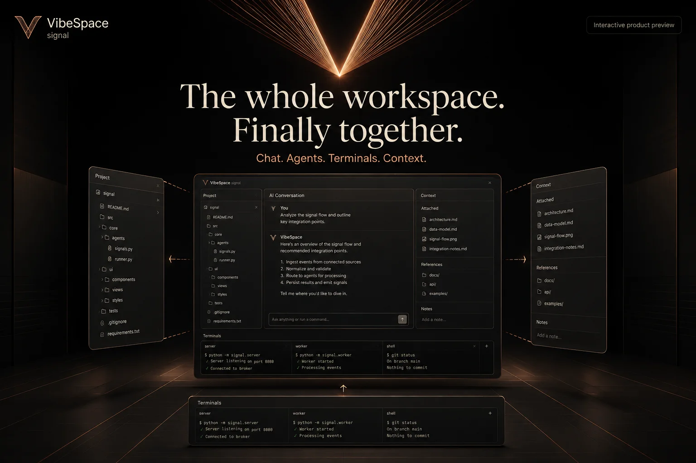

Copper Core
Machined copper, warm graphite, precise assembly. The complete first variation.
Open motion study ↗{kind=link}

{kind=link}

{kind=link}

CINEMATIC PRODUCT WORLD / DESIGN EXPLORATION
Independent art directions, working motion studies, and a complete Copper Core variation. Every concept is preserved. Images below are visual references; the studies are real interactive websites.
Machined copper, warm graphite, precise assembly. The complete first variation.
Open motion study ↗


Daylight, monumental ivory slabs, open architectural composition.
Open motion study ↗





Copper Core balances a distinctive object, immediate product clarity and an adaptable dark/light rhythm. Ivory Architecture is the calmest and most spatial; Signal Chamber is the most atmospheric, with a simpler filament sculpture for small screens. All three retain native scrolling, keyboard controls and reduced-motion fallbacks.
Baseline: d08c7340e27cb3af509db4a9c81bfb2d1b6aaba2. The public website is unchanged by these previews.
Explore the complete variation ↗{kind=link}
{kind=link}
{kind=link}
{kind=link}
{kind=link}
{kind=link}